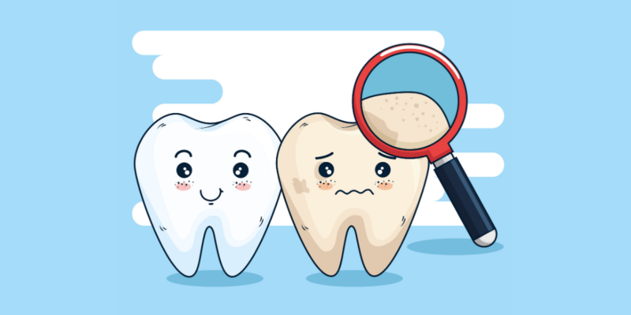
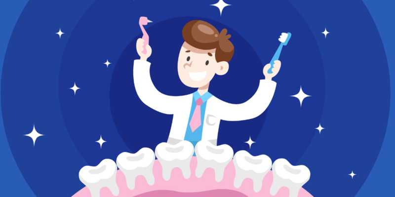
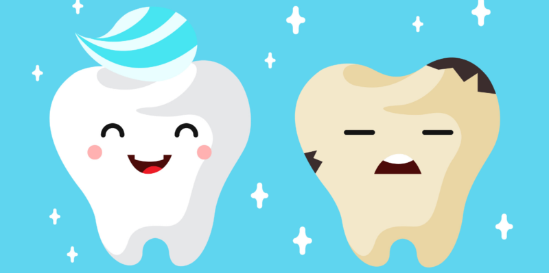

La odontología enfatiza la importancia de mantener una buena higiene bucal.
Esto incluye cepillarse los dientes dos veces al día, usar hilo dental diariamente
y hacer visitas regulares al dentista para limpiezas profesionales.
La higiene bucal adecuada ayuda a prevenir enfermedades dentales como la caries y
la enfermedad periodontal.
La odontología ofrece una amplia gama de tratamientos restaurativos para reparar dientes dañados o perdidos.
Estos tratamientos incluyen empastes, coronas, puentes y prótesis dentales.
Los avances en la odontología moderna permiten restaurar la función y estética de la boca,
mejorando la calidad de vida de los pacientes.
Los dentistas desempeñan un papel crucial en la prevención de enfermedades bucales.
Además de tratar problemas existentes, también educan a los pacientes sobre cómo mantener
una buena salud bucal y prevenir futuros problemas. Esto incluye asesoramiento sobre la dieta,
técnicas de cepillado adecuadas y el uso de productos dentales apropiados.
La salud bucal está estrechamente relacionada con la salud general del cuerpo.
Problemas bucales como la enfermedad periodontal se han asociado con afecciones
como enfermedades cardíacas, diabetes y complicaciones durante el embarazo.
Los dentistas trabajan en colaboración con otros profesionales de la salud para
brindar un enfoque integral de la atención médica.